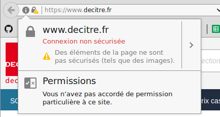

Basculer vers du full HTTPS
Préparer la migration
S'inspirer des retours d'expérience
- Yelp
- A Little Market
- Google
- Stack Overflow
Liens disponibles sur https://srogier.fr/conferences/liens-migration-https.html
Détecter et corriger les Mixed Contents
Contenu non sécurisé sur des pages en HTTPS

Détecter et corriger les Mixed Contents
Utiliser HTTPS pour :
- les images
- les scripts externes
- les iframes
- ...
- en fait, toutes les ressources appelées
Détecter et corriger les Mixed Contents
Si HTTPS n'est pas disponible ⇒ reverse proxy
server {
listen 443 ssl http2;
server_name aide-ebook.decitre.fr;
[...]
location / {
proxy_pass http://aide-numerique.decitre.fr;
}
}
Détecter et corriger les Mixed Contents
Nettoyage des contenus CMS
return preg_replace('~(src=[\'"]http):~', '$1s:', $cms);
CSP report
- Content Security Policy
- Filtrer les ressources utilisées sur le site
CSP report
Content-Security-Policy-Report-Only
default-src 'self' https:;
style-src 'unsafe-inline' 'self' https:;
script-src 'unsafe-inline' 'unsafe-eval' 'self' https:;
img-src data: 'self' https:;
report-uri https://monapi/csp_report
https://github.com/nico3333fr/CSP-useful
Anticiper les besoins en certificats
Avant
- www.decitre.fr
- a.decitre.di-static.com et b.decitre.di-static.com
Après
- www.decitre.fr
- decitre.di-static.com
Adapter le Magento
- Suppression de redirections forcées vers HTTP
- Suppression d'URL en dur
Premiers tests en pré-production
- Certificats gratuits à volonté avec Let's Encrypt
- Validation du comportement global
Éviter la duplication de contenu
- Contrôler les URL canoniques
- Redirections 301 vers les pages HTTPS
Planification de la bascule
- Site par site
- 4 migrations sur deux semaines
Le jour J
On déroule la checklist
Le jour J
- Changement des URL
- Vidage du cache
Le jour J
Le jour J
- Nouvelle propriété dans Google Search Console
Le jour J
- Nettoyage robots.txt
- Nouvelles sitemaps
- Portage de la configuration
- Fetch And Render